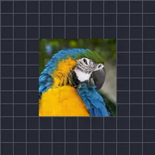

Oscilleren

Beweegt de laag heen en weer langs een hoek, in de diepte of rond in een baan.
Oscilleren beweegt een laag vanzelf heen en weer. Richting kiest beweging langs een Hoek, in de Diepte of rond in een Baan. Frequentie is het aantal slingeringen per seconde, Uitslag hoe ver hij beweegt, en Golf is Sinus (vloeiend) of Driehoek (gelijkmatige snelheid). Met Fase verschuif je meerdere lagen ten opzichte van elkaar, zodat ze niet tegelijk bewegen.
Instellingen
| Instelling | Type | Bereik | Standaard |
|---|---|---|---|
| Richting | Keuze | Hoek, Diepte, Baan | Hoek |
| Hoek | Hoek | -3600° tot 3600° | 45° |
| Frequentie | Getal | 0 Hz tot 16 Hz | 2 Hz |
| Uitslag | Getal | 0 tot 4000 | 25 |
| Golf | Keuze | Sinus, Driehoek | Sinus |
| Fase | Getal | 0 tot 1000 | 0 |